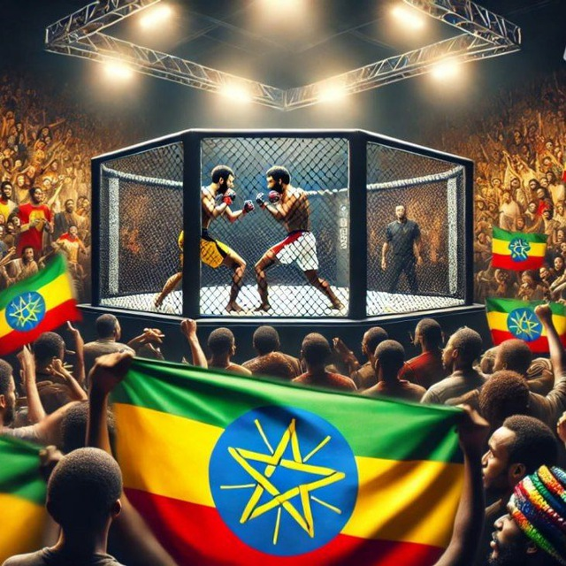

The Ultimate Combat Arena of Ethiopia

Ethiopian Fighting Championship is a premier combat sports organization showcasing the best fighters across Ethiopia. From traditional styles to modern MMA, EFC delivers unmatched action.
Founded in 2026, the Ethiopian Fighting Championship (EFC) was created to bring together fighters from all regions of Ethiopia. Inspired by global combat sports, EFC blends Ethiopian warrior traditions with modern fighting techniques.
The organization has rapidly grown, hosting major events in Addis Ababa and gaining popularity among young fans and athletes.
The Ethiopian Fighting Championship hosts events in multiple regions to promote nationwide participation and give fighters the opportunity to compete in front of local fans. Below are some of the key arena locations organized by region.
Email: efc@ethiopiafight.com
Phone: +251 900 000 000
Head Quarters: Addis Ababa, Ethiopia
© 2026 Ethiopian Fighting Championship